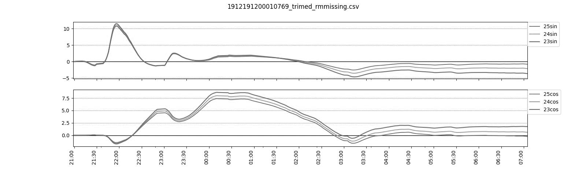

PRODUCTS

Project Edu
C++, Python / RaspberryPi, Qt, Arduino, Julius 声でプログラミングを行い基礎知識を学ぶ。小学校プログラミング教育の手引により小学校からのプログラミングが謳われている今日ですが、開発を行うためのPCの導入やタイピングの練習は小学生、特に低学年にはハードルが高いものであると考えています。そこで、その前提のハードルを無視したこの学習用ロボットを開発しようという話が生まれました。
声のみでプログラミングを学ぶということ、ロボットを用いることでデジタルでなく現実での体験を届け、PC導入・環境設定などを不要とさせること、そしてプログラミングへの興味の取っ掛かりとすることを目標に掲げ計6人のチームで開発しています。
チーム構成はソフトウェア班3人、ハード班3人で、私はソフトウェア班に属しています。主に音声認識と画面構成担当です。
学校のi-CCDという授業で行なっているプロジェクトです。

第67回調布祭アプリ
Java, Swift / Android, iOS, Firebase 私は学園祭(調布祭)実行委員編集局員でした。調布祭では学園祭用アプリを毎年配信しているのですが、その内、第67回調布祭アプリの担当をさせてもらいました。アプリの目的は最新のお知らせを配信したり模擬店や展示の情報をまとめてお届けすることなどです。Android版とIOS版のリリースを行いました。最新情報を取得するべくFirebaseとの連携を行なっています。そしてデータベースというものに初めて触れることになったアプリです。
学園祭にはご近所の方も入場されるので、UIは非常にシンプルかつ分かりやすいものになるように設計しました。
委員会自体人数が少なく、開発やデザインやバグへの対処など全て一人で行ない、まるで現代の開発スタイルに合ってないような状況下でしたが、多くの人に触れてもらいリアルな声を聞かせてもらえると言ういい経験になったと思っています。
リポジトリ : 調布祭アプリAndroid版 調布祭アプリIOS版

格闘ゲーム
Java / IntelliJ メディア情報学プログラミング演習という授業で行なった少人数プロジェクトで製作した作品です。開発サイド2人・リソースサイド1人の計3人で行い、自分は開発サイドで活動していました。主に開発したのはファイター周り全般です。開発者が複数人いたプロジェクトは初めてで、Javaの特性を活かしながら共同開発を行なっていました。
結果的には優秀賞(上から2番目)を取らせていただきました。闘いの場は学校であったりファイターのモデルは自分たち自身であったりします。アイデア・開発・素材の撮影など色々楽しんで作りました。
リポジトリ : 格闘ゲーム
ACTS 2020 (ARLISS 2020 代替大会)
C++ / RaspberryPi研究室で行っている学生主体のチームプロジェクトです。ARLISSでは月面探査を想定して、チームで問題提起・ミッション考案から考え、定めたミッションを達成するための探査機の設計・開発・安全テストなどを実施し、オリジナルの自律型探査機を制作します。そして、大会形式でさまざまな学校から出場した複数のチームと競い総合優勝などを目指していきます。審査基準は、①それぞれで定めたミッションの重要性、そして、②制作した探査機を実際にアメリカのネバダ州にあるブラックロック砂漠にてロケットから投下し、ミッションがどれだけ達成できたかなどの評価に基づきます。ACTSはコロナ禍で開催できなくなったARLISSの代わりに開催された大会で、開催場所が静岡県のあさぎりフードパーク、探索機の投下方法が気球からになっています。ミッションテーマには、地磁気とGPSを使用せず太陽光のみを使用してローバのナビゲーションをするというミッションでした。
チーム名: Solamil
ミッション&制作: 地磁気レス&GPSレスを目的とした太陽光による方位推定制御ローバ
受賞: Overall Winner 総合第1位, Accuracy Award 第3位
担当: ソフト班
大会報告

ARLISS 2022
C++ / OrangePiこの年がコロナ禍の収束してきた年であり、アメリカでの大会を再開した頃になります。親機の他に複数の子機を制作し、子機が先んじて探索した結果を親機に集約し行動ルートを生成するというミッションでした。親機の周りを子機群が一斉に探索する様子はなかなか爽快感があります。なお、RaspberryPiの供給が不安定な年だったこともあり、OrangePiという新しいマイコンに挑戦しております。
チーム名: Dolphins
ミッション&制作: An Unknown Area Explore Method with Child Rovers
(親機ローバが子機ローバ群を用いて広域未踏のエリアを安全に探索する手法の提案)
受賞: Technical Award 第2位
担当: ソフト班リーダ
大会HR / 大会報告書
心拍数の概日性に着目した
アルツハイマー型認知症(Alzheimer's dementia: AD)の判定
C#, Python / .NET, 多数ライブラリ
研究室に所属していたB4〜M2の三年間の自分の研究テーマであった、ADの生理学的性質とAIを組み合わせてADを判定する手法です。私が持っているITの技術とAIへの興味、そして、うつ病を患っている人の一助になりたいという想いの元、生体工学に基づくAI研究をしたいと考えていて、(従事可能な)関連する研究として始めました。精神的負担の大きい認知症患者の介護者を減らすと言う意味でも関連性があります。
ADは世界で社会問題となっている認知症の約半数を占める型で、初期症状表出に十数年かかる一方で発症してしまうと完治が困難であるという問題があります。そのため、日常生活下でのADの早期発見および早期治療が大切となってきます。私はADの症状である"メラトニン分泌の異常による概日リズム(生体リズムの一種)の乱れ"に着目し、ベットのマットレス型センサーを用いて取得した睡眠時の心拍数から"心拍数の概日リズム"をAI(最尤推定法やランダムフォレスト)で数値化することで、概日リズムの強弱を評価し、ADを判定する手法を複数提案しました。
生理学的特徴から仮説を立て、手法を提案し検証するところまで全て私を中心に行ってきたので、かなり思い入れのある手法達です。
- *論文発表(国内)*
-
第48回知能システムシンポジウム
2021
ヘルスケア・医療情報通信技術研究会 (MICT) 2021 - *論文発表(国際)*
-
IEEE
Life Sciences and Technologies (LifeTech) 2021
IEEE Engineering in Medicine and Biology Society (EMBC) 2021
AAAI Spring Symposium Series 2022
IEEE Engineering in Medicine and Biology Society (EMBC) 2022
IEEE Engineering in Medicine and Biology Society (EMBC) 2023 (発表前) - *受賞歴*
-
目黒会賞(修論発表主席)
学生表彰(学会発表業績)
